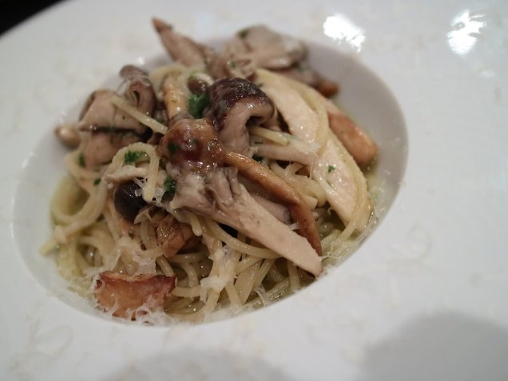

| The Sifted Vol.2: Episode 010-019 (Jp) (The BBB: Breakthrough Bandwagon Books) | |
| 秋月涼介 | |
| The BBB: Breakthrough Bandwagon Books (2016) | |
The Sifted Vol.2: Episode 010-019 (Jp)
Originally written in Japanese and translated by Ryosuke Akizuki
Photographs by Ryosuke Akizuki
Cover design by Tanya
C opyri ght © 2016 Ryosuke Akizuki / The BBB: Breakthrough Bandwagon Books
All rights reserved.
ISBN: 978-1-365-15589-5
The Sifted シリーズについて
「 The Sifted （ザ・シフティッド）」は、秋月涼介による連作ミステリー小説「 The Gifted （ザ・ギフティッド）」シリーズのスピンオフ作品です。著者が実際に訪れた実在のレストランの特徴や魅力について、「 The Gifted 」の主要登場人物たちと語り合うグルメ・リポートとなっています 。
「 Gifted 」は「能力者 」、「 Sifted 」は「ふるいにかけられたもの」を、それぞれ意味しています 。
合わせてお楽しみいただければ、幸いです。
The Sifted （と The Gifted ）シリーズの主な登場人物
名前：ミロ・バルツァ（ Milo Baltsa ）
性別：男
年齢： 16 歳
身長： 168cm
瞳の色：碧
髪の色：白金
誕生日： 3 月 5 日
星座：魚座
血液型： AB 型
職業：高校二年生
好きなもの：ラーメン
* * *
名前：サヤ・トウマ（ Saya Touma ）
性別：女
年齢： 15 歳
身長： 164cm
瞳の色：濃い茶
髪の色：漆黒
誕生日： 10 月 14 日
星座：天秤座
血液型： O 型
職業：高校一年生
好きなもの：甘い物全般
* * *
名前：クロエ・ディレク（ Chloe Dyrek ）
性別：女
年齢： 24 歳
身長： 172cm
瞳の色：青
髪の色：明るい金
誕生日： 9 月 2 日
星座：乙女座
血液型： A 型
職業：旅行社勤務
好きなもの：白ビール、イタリア料理、中華料理（特に点心）
* * *
名前：リカルド・アルバーニ（ Riccardo Albani ）
性別：男
年齢： 32 歳
身長： 183cm
瞳の色：鳶色
髪の色：栗色
誕生日： 10 月 23 日
星座：天秤座
血液型： B 型
職業：ソフトウェア会社勤務（プログラマ）
好きなもの：酒（特にワイン）、パスタ（特にカルボナーラ）
* * *
名前：ヨマ・フィアルカ（ Yoma Fialka ）
性別：女
年齢： 15 歳
身長： 170cm
瞳の色：灰
髪の色：濃い金
誕生日： 7 月 2 日
星座：蟹座
血液型： A 型
職業：祓魔師（エクソシスト）
好きなもの：カレー全般（特にインドカレー、タイカレー）
* * *
※年齢と身長は、 The Gifted Vol.1 時点のものです。
Episode 010 : 五ノ神水産
秋月「魚を飲んでみませんか？」
ミロ「......いきなりどうしたの？ 熱でもあるの？」
秋月「解ってるくせに、つれないなぁ。これだと、私が譫言 （ うわごと ） でも言ってるみたいじゃないか」
ミロ「まあ、普通、魚は食べるもので、飲むものじゃないからね。ついに、リョウがおかしくなった、と思われても仕方ないと思うよ」
秋月「やりづらいなぁ。そこは、「え？魚を飲むの？ どうして？」とか、訊き返してくれないと」
ミロ「サヤだったら、素で言いそうだけど、ぼくは、著者にも厳しいからね」
秋月「......というわけで、今回は、東京都千代田区神田にある『五ノ神水産』だね」
ミロ「このお店は良いよね。何よりまず、表にある紅い鮭のオブジェがいい」
秋月「そこからなの！？」
ミロ「そして、表の黒板には「魚を飲んでみませんか？」の煽り。これは、魚を飲んでみるしかないよね」
秋月「去年、初めて行ったときは『全部入りらーめん銀だら搾り』を食べてみたんだけど――」
ミロ「ちょっとした衝撃だったよね」
秋月「うん。一口目で、何コレ、美味っ！ って感じだった」
ミロ「スープが、かなり独特で、不思議だったよね。粘度の高いねっとりとした豚骨スープのようでありながら、味は銀鱈なんだよね」
秋月「今までに飲んだことが無いスープで、魚の味が凝縮されていて――言わば、銀鱈白湯？まさに魚を飲んでるって感じだったな」
ミロ「麺は、中太麺で、チャーシューは鶏だったけど、スープの味が意外すぎて、ちょっと他は霞んでしまったね」
秋月「でも、興味深い――というと失礼かもしれないけど、口コミだと、評価が真っ二つに割れてるんだよね」
ミロ「そうなんだ？」
秋月「うん、びっくりしたよ。個人的には、神懸かってるラーメンだと思ったんだけど、魚臭くて食べられない人が、結構いるみたいなんだよね」
ミロ「やはり、人の味覚は千差万別だね。だから食事のレビューは難しい」
秋月「いやぁ、でも、私は推しておくよ。魚系スープの苦手な私も感激した銀鱈スープだった」

ミロ「そういえば、遠いのに、あれから、ちょくちょく行ってるよね」
秋月「うん。衝撃の味を求めて、いくつか食べてみたけど、『銀だら搾り』を越えるものには、まだ出会えてないね」
ミロ「紅いスープのこちらは、『焼き鮭搾り』だね。これも、美味しかったけど、ぼくも『銀だら搾り』の方に軍配を上げたいな」
秋月「あと、一度だけ見掛けたことがある鰻（うなぎ）搾りも気になるんだよね。これ、魚なら何でも搾れるのかな？」
ミロ「魚は果物じゃないから、なんだか変な表現だけど、何を搾りたいの？」
秋月「鰤（ぶり）とか、秋刀魚とか、真鯛とか、鮃（ひらめ）とか、縞鰺（しまあじ）とか、本鮪大トロとか、牡丹海老とか、鮟肝（あんきも）とか――」
ミロ「今、思い付くままに、食べたい寿司ネタ、挙げてるだけじゃないの？」
秋月「ば、ばれてる......」
-The End-
■五ノ神水産
東京都千代田区神田多町 2-9-6 田中ビル別館 1F
全部入りらーめん銀だら搾り 1080 円
焼き鮭搾り 780 円
※この物語は半フィクションであり、実在の人物や団体、出来事などと、多少関係があります。
Episode 011 : うなぎ亭 友栄
秋月「鰻を飲んでみませんか？」
サヤ「ええ？鰻を飲むの？ どうやって？」
秋月「いやぁ、サヤは良い子だね」
サヤ「え？ 何、リョウ、どうしたの？」
秋月「いや、なんでもないよ。 さて、今回は、神奈川県小田原市風祭にある『うなぎ亭 友栄』だね 」
サヤ「あ、ミシュランで一つ星に選ばれた鰻のお店だね。ここで、鰻が飲めるのかな？」
秋月「いや、ごめん、私が悪かった。鰻を飲む話は忘れて」
サヤ「ええ？ まあ、リョウがいいなら、いいけど。えっと、このお店は雑誌で見付けて、気になって行ってみたんだよね」
秋月「そうそう。初めて行ったときは、たくさんの車が路肩に寄って渋滞してたから、何かあったのかと思ったら、店の駐車場に入るために待ってたんだよね」
サヤ「わたし、車で行列するお店なんて、初めて見たかも」
秋月「でも、このお店、人は並ばなくていいんだ。携帯電話の番号を伝えて、電話がかかってくるのを待ってればいい。その辺を散歩してると、電話がかかってくるよ――一時間半後くらいには......」
サヤ「待つときって、時間が経つのが恐ろしく遅いよね......」
秋月「でも、我慢して待つと、ほら、こんなに豪勢な『上うな重』が食べられるんだ。鰻は養殖ものだけど、良質な鰻の代名詞になっている青鰻を使ってるんだって」
サヤ「これ、焼き上がった身が光ってるように見えて、綺麗だったよね。身は、ふっくらとしていて柔らかく、口の中で蕩けちゃう。タレの味も、上品な感じで、ご飯にとっても合うよね」
秋月「あとは、山椒をかけると、味と香りが引き立つね。子供の頃は、鰻は苦手だったけど、美味しい鰻は、本当に美味しいんだと思わされたよ」
サヤ「ご飯を無料で大盛りにしてくれるのも、男性にはいいよね」

秋月「それと、この『ぴいなっつ豆富』も、結構いける」
サヤ「うんうん。食感がねっとりとしてて、ピーナッツの味が濃厚で、 意外と、山葵も合うんだよね。 これなら、もう一つくらいは食べられそう......」
秋月「出た、女子の別腹」
サヤ「でも、リョウなら、あと三つとか平気でしょ？」
秋月「いや、予算の都合もあるし、太るから、一個で終わりだよ」
サヤ「予算といえば、『上うな重』は、年々、値段が上がってるよね」
秋月「うん......。二年前は、 3150 円だったけど、今回は、 4000 円だったね」
サヤ「でも、鰻は養殖されてるんでしょ？ どうして高くなるのかな？」
秋月「いや、鰻の完全養殖は、まだコストが高くて、商業化できないらしい。養殖用の鰻は、稚魚を海で獲ってから、池で育てているだけなんだ。その稚魚の漁獲量は、年々落ちていて、絶滅も危惧されている。だから鰻の値段も高騰するんだね」
サヤ「そっか。じゃあ、これからは、鰻を守ることも考えないといけないね」
秋月「そうだね。いくら美味しいからって、たくさん獲るわけにもいかないね」
サヤ「その点、リョウは、大丈夫だよね」
秋月「え？ どうして？」
サヤ「庶民だし、うな重を食べるのは、年に五、六回くらいかなって」
秋月「え、いや、二、三回かな......」
-The End-
■うなぎ亭 友栄
http://www.tomoei-unagi.com/index.htm
神奈川県小田原市風祭 122
上うな重 4000 円
ぴいなっつ豆富 500 円
※この物語は半フィクションであり、実在の人物や団体、出来事などと、多少関係があります。
Episode 012 : Il mare （イルマーレ ）
秋月 「魚を飲んでみませんか？」
クロエ「もう、いい加減、そのネタ振りは、やめろ」
秋月 「流石は、姉御、問答無用で一刀両断とは......」
クロエ「いいから、真面目にやれよ。今回は、神奈川県小田原市早川の『 Il mare （イル マーレ）』だろ？」
秋月 「そうそう、イタリア料理のお店だね。正に『魚を食べてみませんか？』っていうフレーズが、ぴったりの店なんだ」
クロエ「このお店、漁港の市場や農家から仕入れた新鮮な魚介類や野菜を使って、その時の一番良いものを最高の状態で提供するために、総てのコースがおまかせになっているのが特徴だね」
秋月 「しかも、基本的に肉類は封印されていて、出てこないんだ。でも、実は肉料理も美味しいんだよね」
クロエ「今回は、あれだろ？ ランチの最高峰『 10 500 円コース』」
秋月 「久々に来たから奮発してみたんだけど......、お陰で、どの写真を載せるか、非常に迷う......」
クロエ「じゃあ、あたしが決めてやるよ」
秋月 「流石は、姉御、問答無用で即断即決とは......」
クロエ「ざっと『 10 500 円コース』の内容を解説すると、アミューズ、前菜二品、パスタ二品、メイン、デザートになっている。これら総てが、基本的にその時の旬の魚介類で構成されてるって感じだな。他に、 3000 円、 5000 円、 8500 円のコースがあるけど、それらの差は、品数や使われる高級素材が減っていく感じだね」
秋月 「それで、今回は、どの料理を選んだの？」
クロエ「まずは、定番というか、おまかせとはいえ、どのコースにも含まれる『鮮魚のサラダ仕立て』だね」
秋月 「これ、見た目が華やかなんだよね」
クロエ「これも、コースの値段によって、品数が増減するんだけど、今回は、十種類の魚介で構成されてたね。どれも、丁寧に仕事がしてあって、例えば、アオリイカにはカラスミが、イナダにはアンチョビソースが、鯖（サバ）には酢漬けのマスタードが、それぞれ、添えられてたんだ」
秋月 「これ、見てるだけで、ワクワクするよね」
クロエ「もちろん、味付けも色々あって、一品一品、楽しめるんだよね。あたしは、西京味噌でマリネしたチーズを包んだ 鯥 （ムツ）とか、バルサミ コソースでマリネした宗太鰹（ソウダガツオ）とか、好きなんだよね」
秋月 「それ、いいよね。チーズ好きにはたまらない......。でも、ドライトマトと真ダコの組み合わせも捨てがたい」
クロエ「そして、次は、二品目のパスタ『小田原産伊勢海老のバヴェッテ』だね」
秋月 「伊勢海老の半身、丸ごと来た！」
クロエ「季節にもよるけど、『 10 500 円コース』だと出てくる可能性が高い一品だね。伊勢海老は、身がぷりぷりしていて、甘味があって、たまんないね。パスタも、もちもちしていていいし、何よりソースが美味しい」
秋月 「これ、もう、完全にメイン料理だよね」
クロエ「でも、さらにメイン料理が出てくるから、『 10 500 円コース』はやめられない」
秋月 「今回、前菜の二品目の『温かい前菜』も美味しかったし、『アミューズ』のフリットも絶品だったし、このお店、ハマるよね」
クロエ「も、もう、あたし、この店の『 10 500 円コース』から抜け出せない......」
秋月 「ク、クロエ、落ち着いて、まずは自分の収入をよく考えて！」
-The End-
■ Il mare （イルマーレ）
http://www.il-mare.co.jp/
神奈川県小田原市早川 1 丁目 11-6 PORT SIDE K-II 1F
10 500 円（消費税別）コース（別途サービス料 10% ） 10500 円
※この物語は半フィクションであり、実在の人物や団体、出来事などと、多少関係があります。
Episode 013: スーツァン レストラン 陳
リカルド「よう、どうした？ 今回は、麻婆豆腐でも飲んでみるのか？」
秋月 「リカルド、他人の傷口に塩をすり込むのはやめて......」
リカルド「一刀両断された傷口なら、麻辣豆腐をすり込むと良いって言うぜ」
秋月 「真顔で、嘘をつかないでよ」
リカルド「嘘じゃねぇよ、冗談だ。本気にするな。 それはさておき、今回は、どこだ？中国か？ 台湾か？
秋月 「今回は、日本だね。ここのところ、海外に行く用事が無くて」
リカルド「そうは言っても、この連載は、かなりタイムラグがあるからな。今は九月だが、載るのは、来年の一月ってことも、少しは考慮しろよ」
秋月 「でも、そういうラグは、小説と現実の間にもあるからね。きみたちが小説の中で半年過ごす間に、私なんか四年も歳を重ねてしまった。
リカルド「それ、何気にリアルで、怖ぇな。まあ、海外に行く用が無いなら、時間もあるんだろ？次の事件の執筆は、進んでるのか？」
秋月 「さて、今回は、東京都渋谷区にある『スーツァン レストラン 陳』です」
リカルド「お前、今、すげぇ、あからさまに話題、変えたな」
秋月 「えっと、この日は、渋谷でイベントがあったから、ネットで渋谷の昼食候補を検索していて、見付けたお店なんだ」
リカルド「ホテルの中にある店で、かなりの高級感があったよな」
秋月 「ちょっと庶民としては怯んだけど、そこは深く気にせず突入だね」
リカルド「流石に、数々の修羅場を潜り抜けてきただけのことはあるな。ロンドンやパリのお高いレストランに、ジーンズ姿で飛び込んだとか」
秋月 「それを、ここで言うな......」
リカルド「しかし、ここ、陳さんのお店なんだな」
秋月 「そうそう。『料理の鉄人』って番組に一時期ハマってたから、気になったんだ」
リカルド「流石、相変わらずミーハーだな」
秋月 「でも、この『海老のマヨネーズソース炒め』、かなり美味しかったよ」
リカルド「だな。マヨネーズソースにコクと深みがあって、何だか解らねぇが、美味い。海老自体は、ちょっと普通な感じだったが、濃厚なソースが後を引くな」
秋月 「いつか、もっと高いコースの魚介類も試してみたくなるよね」
リカルド「あと、『陳建一の麻婆豆腐』も絶品だったな」
秋月 「痺れ自体は、あまり感じなかったけど、適度な辛味と、奥深い味わいが良かったよね。いやぁ、正に至福。ホント、ご飯が止まらなくなるよね」
リカルド「確かに、今まで、色んな店で、麻婆豆腐を食べてきたが、なかなか、好みの麻婆豆腐に出会わないっていうのはあるな。この麻婆豆腐に出会えたことは、かなりの僥倖と言える」
秋月 「そういえば、前にテレビで、総料理長の菰田シェフが麻婆豆腐に色んな隠し味を入れてるのを観たことがあるんだけど、あれを観てると、麻婆豆腐って、奥が深いんだなって思わされるよね」
リカルド「まあ、どんな種類の料理でも、極めた人は凄いってことだろうな。俺らは、単純に食べて、「美味い」としか言えねぇんだよ。それ以外の言葉が、なかなか見つからねぇ」
秋月 「確かに味を文章で表現するのは、難しいよね。でも、その点、写真なら、見た瞬間に美味しそうっていうのが伝わるよね」
リカルド「......いや、それも、「美味しそう」しか伝わってないぞ」
秋月「え？ じゃあ、もう、行って食べてみるしか......」
リカルド「それだと、お前、何の役にも立ってないが......」
-The End-
■スーツァン レストラン 陳
http://www.srchen.jp/
東京都渋谷区桜丘町 26-1 セルリアンタワー東急ホテル 2F
ランチセット（料理 2 品選択） 2970 円
陳建一の麻婆豆腐 / 海老のマヨネーズソース炒め
Episode 014 : ラーメン 力
ミロ「じゃあ、そろそろ、今回のリポートを始めようか。ところで、お店の写真、準備中になってるけど？」
秋月「実は、このお店も、ずっと行列になってて、人がいない写真が、これしか撮れなくて......」
ミロ「食べ終わったあと、表の人がいなくなるまで待ってたら、あっという間に、暖簾が片付けられて、準備中になったんだよね」
秋月「そうそう。まさに、あっという間の出来事だった」
ミロ「ぼくたちがお店から出てきたら、行列はあと二、三人だったから、すぐにいなくなると思ったけど、後から後から人がやって来て、結局、スープ終了で、何人かは断られてたよね」
秋月「私も、何度か経験があるけど、気になるラーメン屋に行って、臨時休業だったり、スープ切れだったりすると、かなりヘコむ......」
ミロ「まあ、この日は、ちゃんとラーメンが食べられたから、いいんじゃない？」
秋月「まあね。というわけで、今回は、福岡県北九州市にある『らーめん 力（りき）』だね」
ミロ「豚骨ラーメンの本場、九州にまで行って食べてくるなんて、流石だね」
秋月「でも、東京－小倉間は、約 1000km らしいから、ミロの能力を使えば、およそ 5000 回の空間転移で行けるよ」
ミロ「一回の転移が 1000 円でもいいなら、請け負うけど？」
秋月「一回 10 円でも、新幹線の往復切符の方が安いよ......」
ミロ「移動手段の話はさておき、ラーメンのリポートの方だけど、これ、麺どころか、スープも、ほとんど見えないね」
秋月「うん......。『チャーシューらーめん』を注文したら、これが出てきたんだ......」
ミロ「すごくインパクトのあるビジュアルだったよね。薄切りのチャーシューが丼を取り巻いていて、その中心には葱とキクラゲ。スープは白濁した豚骨スープで、優しい味だったね」
秋月「麺も細麺だったから、全体的には豚骨ラーメンの王道って感じだった」
ミロ「でも、何より、チャーシューが美味しかったよね」
秋月「そうそう。私、脂身が多いのが好きだから、このチャーシューは良かったね。平べったくて、舌の上にひたっと乗る感触がよくて、噛むとじわっと、脂身の甘味が染み出してくる」
ミロ「なんだか、リョウは、このチャーシューをおかずにして、麺を食べてる感じだったよね」
秋月「まさに......そして、麺の方が先に無くなった......」
ミロ「そこで、登場するのが、この『替玉』だね」
秋月「そうだね。これで、丁度、麺とチャーシューの量が均等になった気がしたよ......」
ミロ「この替え玉は、福岡の長浜発祥と言われてるシステムで、ラーメンの麺を食べ終えたあと、後から茹でた麺を追加することができるんだ。大盛りだと、食べてる最中に麺が伸びてしまうから、その対策になるよね」
秋月「うん、ただ、何回も替え玉をスープの中に入れてると、麺の茹で汁でスープの味が薄くなるっていう弊害もあるけどね。前に別のお店で替え玉を四回くらい注文してる人を見て、びっくりしたことがあるよ」
ミロ「それは、替え玉でもいない限り、ぼくたちには、到底無理な芸当だね」
秋月「ミ、ミロがそんな冗談を言うなんて......替え玉の話だけに、まさか、あの能力者がミロに化けてるなんてことは......（ The Gifted Vol.4 参照）」
ミロ「――お前、双子じゃなくて良かったな」
秋月「ぎゃー！」
-The End-
■らーめん 力
福岡県北九州市八幡東区春の町 5 丁目 6-9
チャーシューらーめん 850 円
替玉 100 円
※この物語は半フィクションであり、実在の人物や団体、出来事などと、多少関係があります。
Episode 015: ひろしま焼き 冨士山
サヤ「また、わたしの番だね。うーん、楽しみ、楽しみ」
秋月「サヤ、なんだかノリノリだね」
サヤ「うん。この食リポをやるようになってから、色々美味しいもの が食べられる機会が増えて、楽しいの。今回は、お好み焼きだよね？ わたし、初めてだったかも」
秋月「私は子供の頃から、よく食べてるんだよね」
サヤ「えー、いいなぁ。わたし、ずっと前から気になってたの」
秋月「という訳で、今回は、広島県広島市にある『ひろしま焼き 冨士山』で、食べたのは、『やまスペシャル』だね。広島市には、 1000 軒以上、お好み焼きのお店があるみたいだけど、まだ、 5 軒くらいしか開拓できてないね......」
サヤ「ええ？ 1000 軒もあるの？毎日別のお店に通っても、制覇するのに、 3 年くらいかかっちゃうよ。ところで、『やまスペシャル』って、何がスペシャルなの？」
秋月「えっと、普通は、『肉玉そば』とか、『肉玉うどん』なんだけど、スペシャルは、そば、または、うどんがダブルになって、さらに、もちとチーズが追加されるんだ」
サヤ「それって、量がすごくないのかな？」
秋月「一人で食べる訳じゃないから大丈夫だよ。それに、他にも鉄板焼きメニューが充実してるしね。ちなみに、今回は『牛タンステーキ』も注文してみたよ」
サヤ「なんだか、豪勢だったよね。でも、お好み焼き、美味しかったな。ソースの甘辛酸っぱさもいい感じだけど、生地も麺も美味しかったよね。あと、不意打ちみたいに出てくるお餅が柔らかくて、くにゅっとした食感が、とってもいいの。チーズも、お好み焼きにとってもよく合うんだね」
秋月「チーズ好きとしては、外せないトッピングだね。ソースと生地と麺と餅とチーズの味が渾然一体となって、口の中に広がるのがたまらないんだよねぇ」
サヤ「ところで、『ひろしま焼き』って書いてあるけど、何のことなのかな？」
秋月「ああ、多分、広島風のお好み焼きという意味だと思うよ。関西風のお好み焼きとは、作り方が違うからね」
サヤ「え？ どう違うの？」
秋月「簡単に説明するなら、広島風は、生地を敷いて具材を重ねて焼いていくんだけど、関西風は、生地に具材を混ぜてから、まとめて焼くんだ。この前、大阪の難波で食べた関西風のお好み焼きも、ふわふわで美味しかったよ」
サヤ「へぇ、色々あるんだね。牛タンステーキも厚切りで絶品だったけど、関西風のお好み焼きも気になっちゃう」
秋月「そういえば、この前、日本に来たドイツ人の知り合いも、 " Okonomiyaki is my favorite food!" って言ってたよ 」
サヤ「なんだか、わたしも、お好み焼きが好きになっちゃった。リョウ、シティにも、一軒、お店を作ってくれないかな？」
秋月「そういうメタなお願いは、どうかと思うけど、お好み焼きを食べるシーンを書いてみるのも面白いかもしれないね。でも、それって、海外の人たちに巧く伝わるのかな？」
サヤ「それは、書き手の腕前次第じゃないのかな？」
秋月「うっ......痛いところを......」
-The End-
■ひろしま焼き 冨士山
広島県広島市西区己斐上 4-16-11
やまスペシャル ( そば ) 900 円
牛タンステーキ 1000 円
※この物語は半フィクションであり、実在の人物や団体、出来事などと、多少関係があります。
Episode 016: GLICINE （グリーチネ）
秋月 「藤の花――花言葉は、至福の時、歓迎、陶酔か......」
クロエ「自己陶酔して、何、似合わないこと言ってんだ？ どうした？」
秋月 「クロエ、そんな変なものを見るような目で見ないでよ」
クロエ「いや、でも、実際、あんた、変だろ？」
秋月 「いやいや、変じゃないって、お店のホームページにそう書いてあったんだから」
クロエ「ああ、なるほど。藤沢にある、あのイタリア料理の店か」
秋月 「そうそう。偶然、見付けて以来、ちょっとハマってるんだよね」
クロエ「確か、初めて行ったときは、別の店に行こうとしてたんだっけ？その店が閉まってて、どこに行くか迷った後、続けざまに二店、入れなくて、四店目がこの店だったそうだな」
秋月 「まさに巡り合わせの縁だね」
クロエ「まあ、そのお陰で、あたしも、その奇縁の美味のお相伴にあずかれたってわけだ」
秋月 「そうそう、だから、変な目で見ないで、感謝してよ」
クロエ「という訳で、今回は神奈川県藤沢市の『 GLICINE( グリーチネ ) 』だね」

秋月 「今までは、ずっとランチのコースを食べに行ってたんだけど、この日は、初のディナーのコースだったね」
クロエ「ディナーには、 3 種類のコースがあって、今回、注文した一番安い『 Menu Cena 』以外は、事前に予約が必要みたいだな 」
秋月 「そのコースの構成は、おまかせ 5 皿で、前菜、パスタ二品、メイン、デザートだったね」
クロエ「写真は、その中から、一品目のパスタとデザートを選択してみたよ」
秋月 「相変わらず、決断が早いね」
クロエ「あんたの写真の腕が悪いからね。写りの良いものを選んだんだ」
秋月 「うっ......」
クロエ「写真の腕はともかく、料理はかなり美味しいね。こちらは『茸のスパゲッティアーリオオーリオペペロンチーノ』だ。皿が目の前に運ばれてきた瞬間から、何とも言えない良い薫りが漂ってたね」
秋月 「うん。椎茸、舞茸、エリンギがふんだんに使われた、まさにキノコ尽くしのオリーブオイル・パスタだったよね」
クロエ「中には揚げたような大蒜が入ってて、それがまたほくほくしてて、美味しいんだよねぇ」
秋月 「でも、この後、出てくる二品目のパスタ『ボロネーゼと牛蒡のラガーネ』も美味しかったよね」
クロエ「平打ち麺のラガーネがもちもちで、ボロネーゼに合ってて美味しすぎる......。あんたの写真がよければ、パスタは、こっちの方を推してたのに！」
秋月「ええ？ で、でも、反論できない......」
クロエ「あと、メインの『神奈川産 麦豚のカツレツ サラダ仕立て』も、カツレツがさくさくで、甘味のある豚肉が美味しかったんだけど、あえて、デザートの写真を載せてみたよ」
秋月 「あの豚のカツレツは、トンカツとはまた違ったベクトルの美味しさなんだけど、惜しい......自分の写真の腕の悪さが悔やまれる......」
クロエ「まあ、そう落ち込むなって。この『モンテビアンコ～ほうじ茶・黒糖～』も美味しいじゃないか」
秋月 「これ、やばいよね。初めて食べたとき、今までで一番美味しいモンブランだと思ったよ」
クロエ「栗のまろやかな甘味と、ほうじ茶の香ばしさと、黒糖の力強い甘味の三位一体にやられちまうよな」
秋月 「いやぁ、堪能したね。特にディナーは、パスタが二品になるのがいいね」
クロエ「しかし、あれは恥ずかしかったよな。あんた、それを知らずに、ランチと同じように選択式だと思って、二品目のパスタを――」
秋月「ちょっ、ちょっと待った！ はい、今回は、ここまで！」
-The End-
■ GLICINE( グリーチネ )
http://glicine-shonan.jp/
神奈川県藤沢市鵠沼橘 1-3-16 サンプラザ鵠沼橘 B1F
Menu Cena （別途サービス料 8% ） 3800 円
※この物語は半フィクションであり、実在の人物や団体、出来事などと、多少関係があります。
Episode 017: 上海故事
秋月 「うーん、どうしよう......困ったな」
リカルド「どうした？ 珍しく何か悩んでるようじゃねぇか」
秋月 「台湾の中華料理が美味しすぎて、今回、どのお店のリポートをするか迷っちゃって」
リカルド「......幸せな悩みだな」
秋月 「幸せなのは、良いことだよ」
リカルド「ま、否定はしねぇけどな。それで、どこにするんだ、さっさと決めちまえよ」
秋月 「そうだなぁ。四川料理が続いてるから、上海料理とかどうかな？」
リカルド「だけど、お前、上海料理とか言いながら、注文するものは、ほとんど変わらないから、あまり上海料理って感じでもないんだよな。お前、上海料理屋でも、普通に麻婆豆腐とか注文するだろ？」
秋月 「うっ......、だって、自分の好きなものって決まってるし......」
リカルド「まあ、大勢で行くわけじゃねぇから、どうしても注文は偏るんだよな」
秋月 「そうそう。だから、好きなもののリポートでいいんだよ」
リカルド「じゃあ、今回は、あそこだな？ 台北 の MRT 松江南京駅の近くの『上海故事 （シャンハイグースー）』」
秋月 「そうそう。日本から持ってきたガイドブックに載ってたお店だね」
リカルド「まずは、『紹興醉鶏（シャオシンズイジー）』だな。蒸し鶏の紹興酒漬けって感じの料理だ」
秋月 「これ、かなり美味しかったよね」
リカルド「そうだな。鶏肉も皮も軟らかくて、ジューシーで食感がいいな」
秋月 「これ、口に含むと、仄かに紹興酒の薫りが鼻腔を抜けていくんだよね。その甘い薫りがなんとも言えなくて、食べてると幸せな気持ちになるよね」
リカルド「お前、紹興酒は飲まないくせに、この料理は美味しく感じるのかよ？」
秋月 「確かに、不思議だけど、そうだね。何て言うか、紹興酒独特の強いクセが消えて、後に爽やかな味と薫りだけが残った感じ？」
リカルド「よく解らねぇが、確かに味付けも上品で繊細な感じだったな。この手の鶏や鴨の料理は、今まで色々食べてきたが、一番、美味かったかもしれない。ただ、一つ難点を言えば、骨が多くて、少し食べにくかったことだな」
秋月 「でも、台湾の肉料理は、骨付きが多いよね」
リカルド「さて、お次は、『鳳梨蝦仁（フォンリーシャーレン）』だな」
秋月 「エビマヨ！ エビマヨ！」
リカルド「落ち着け。いい歳して、エビマヨで騒ぐな」
秋月 「ちょっと、マヨラー魂がうずいちゃって」
リカルド「まあ、俺もエビチリよりは、エビマヨの方が好きだが」
秋月 「お、好みが合うね。ところで、前に台湾の人から聞いたんだけど、台湾のエビマヨには、必ず『鳳梨（パイナップル）』が付いてるんだよね。日本みたいにエビマヨだけの料理は、台湾には無いのかもしれない」
リカルド「しかし、これも、美味かったな。台湾のマヨネーズにありがちな変なくどさが無くて、やや甘い感じが海老とパイナップルによく合う」
秋月 「海老は、小海老だけど、ぷりぷりしてて、二、三匹を一度に口に頬張ると、かなり至福な感じに......。ご飯を食べる手が止まらなくなるよね」
リカルド「しかし、お前、よくエビマヨで、あんなに飯が食えるよな」
秋月 「まあ、マヨネーズだけでも、ご飯、食べられるけどね」
リカルド「......お前、それって、海老の立場は？」
-The End-
■上海故事
台湾台北市中山區松江路 101 號 国際商業大樓 1 樓
紹興醉鶏 380 元
鳳梨蝦仁 298 元
※この物語は半フィクションであり、実在の人物や団体、出来事などと、多少関係があります。
Episode 018: S.K.P （エスケーピー）
ヨマ「こんにちは。......ここで、いいのかな？」
秋月「お、来たね」
ヨマ「私、やっと、 The Sifted に参加できるようになったのね。うーん、ちょっと感慨深いなぁ 」
秋月「感激してるところ、申し訳ないけど、まずは自己紹介をよろしく」
ヨマ「あ、そうだね。私は、ヨマ・フィアルカと言います。年齢は 16 歳だけど、高校には行ってません。『 The Gifted Vol.5 』からの準レギュラーで、シティ司教区の司祭様の依頼で、時々、シティに悪霊の調査に来る、教会所属の祓魔師（エクソシスト）です」
秋月「流石に、堂々としてるね」
ヨマ「だって、依頼者への自己紹介も祓魔師のお仕事の一つですから。 ところで、ミロはいないの？」
秋月「いないよ。ミロは、ラーメン担当だから、次回だよ」
ヨマ「えー、なんだか、急にテンション下がっちゃったな。もう、帰ろうかな......」
秋月「ええ？ ちょ、ちょっと待ってよ。ミロが「カレーの食リポは、ヨマに任せるべきだね」って断言してたから、ヨマにお願いしようと思ったのに」
ヨマ「え、そうなの？ ミロがそこまで期待してるのなら、張り切っていこうかな。じゃあ、まずは、小田原の隠れ家的アジア料理のお店『 S.K.P 』からだね」
秋月「 19 時開店だけど、ここは、まず、夜だと、お店が見つからないよね」
ヨマ「そうなのよね。ビルの一階にあるんだけど、路地裏みたいなビルの隙間を進むと、お店の入口があるの。しかも、見付けた当時は、食べログに店名すら載ってなかったし、ローカル配布の情報誌に載ってなかったら、絶対に気づかないお店だよ」
秋月「でも、試しに行ってみたら――」
ヨマ「この『 咖 里雞（マレー風 鶏カレー）』が美味しくって、すっかりハマっちゃったよね。 なんだろう？ イエローカレーがベースになってるのかな？鶏肉と馬鈴薯のカレーなんだけど、黄色いカレーの味がねっとり濃厚で、適度にクリーミーで、いくらでも食べられる感じ」
秋月「鶏肉も――」
ヨマ「そうそう、鶏肉も軟らかくて、美味しいの。このカレーと鶏肉とご飯を一緒に口に入れると、とっても幸せ」
秋月「えっと、次は――」
ヨマ「次は、『レッドカレー（チキン）』だね。これはね、当初、『 咖 里雞』に比べると、味がクリーミー過ぎて、ちょっと印象が薄い感じのカレーだったの。でも、通い始めて三年半経ったある日、辛さの調節ができることに気が付いて、少し辛めでお願いしてみたのね。そうしたら、なんだか、辛味がちょうど良い感じになっちゃって、ご飯に合うなぁって。具材の鶏肉、茄子、筍も美味しいんだよ」
秋月「そういえば――」
ヨマ「そういえば、『ビコール エクスプレス（豚のココナッツ煮込み）』っていう料理もあって、これが、ココナッツと豚肉好きには、たまらない味になってるの。それで――」
秋月「ヨ、ヨマ、ちょっといい？」
ヨマ「ん？ どうしたの？」
秋月「少しは、私にも喋らせて......」
-The End-
■ S.K.P （エスケーピー）
神奈川県小田原市栄町 3-10-11 開進小田原ビル 102
咖 里雞 1000 円 （ライスは含まれません）
レッドカレー（チキン） 750 円（ライスは含まれません）
※この物語は半フィクションであり、実在の人物や団体、出来事などと、多少関係があります。
Episode 019: 思暮昔 & ICE MONSTER 忠孝旗艦店
ヨマ「リョウ、私、連続で呼ばれたみたいだけど、いいの？」
秋月「いいよ、いいよ。今回は、スペシャルだから」
ヨマ「スペシャル？」
秋月「前回 の Episode 18 までで、 The Sifted Vol.1 の出版から数えて九話目なんだけ
ど、 Vol.1 のときは、十話分の分量で本にしたから、 Vol.2 用にあと一話、追加したいんだよね。ミロまで回すと中途半端だから、ここでスペシャルを入れることにしたんだ」
ヨマ「ふーん、そうなんだ？それで、今回は、どこのカレーをリポートすればいいの？」
秋月「いやいや、今回はスペシャルだから、カレーじゃないよ」
サヤ「――あ、ごめんね。ちょっと遅れちゃった。もう、始まってる？」
ヨマ「ううん、今、始まったところ。サヤも参加するの？」
サヤ「うん。珍しく甘い物のリポートをやるからって、リョウに呼ばれたの。この前、一緒に台湾に行ったときのアレだと思うんだけど......」
ヨマ「ああ、アレかぁ。アレはいいよね。ところで、写真が二つに別れてるけど、いいの？」
秋月「いいの、いいの。前回のスペシャルは、一店で二話分やったから、今回は、二店で一話やろうと思ってね。――というわけで」
サヤ＆ヨマ「今回は、台北の超有名かき氷店、「思慕昔（スムージー）」と「 ICE MONSTER （アイスモンスター）」だね！」
ヨマ「あ、これは、「思慕昔」のかき氷だね。ああ、もう、これ、写真を見てるだけで、幸せ」
サヤ「うん、うん」
ヨマ「手前の方が「手工鮮奶酪綜合芒果雪花氷」で、手作りパンナコッタ＋フルーツミックスマンゴーかき氷だね」
サヤ「そして、奥の方が「超級雪酪芒果雪花氷」で、スーパーマンゴーかき氷＋マンゴーシャーベットって感じかな？」
ヨマ「ねぇ、サヤ、どっちか選べって言われたら、どっち？」
サヤ「うーん、迷っちゃうけど、スーパーマンゴーの方かな？」
ヨマ「だよね。パンナコッタのふわとろな食感は捨てがたいけど、キウイや苺よりも、マンゴーが多い方が、幸せ感が大きいよね」
サヤ「うん、うん。口の中がマンゴーで一杯になって、もう、至福って感じ。シャーベットも、マンゴーの味が際立ってて美味しかったよね」
ヨマ「でも、 ICE MONSTER の「新鮮芒果綿花甜」も推したくなるよね 」
サヤ「これは、食べ始めたとき、「思慕昔」の方が美味しいかも、って思ったけど――」
ヨマ「下にあるマンゴーとマンゴーソースをかき氷に絡めて食べると、とても甘くて、美味しいことに気づいたんだよね」
サヤ「かき氷を切り崩して、マンゴーやパンナコッタ、シャーベットと混ぜて食べると、とっても良い感じ」
ヨマ「うーん、これは甲乙つけがたいよね。それに、他にも色んな種類のかき氷があって、超気になる～」
サヤ「うん、うん。もう、ホント、幸せ～って感じだったよね。また、一緒に台湾に行きたいね」
ヨマ「ねー。......あ、そういえば、リョウがいたの、忘れてた。じゃあ、そろそろ、リポート始める？」
秋月「ええ？ 今のって、ただの女子トークだったの！？」
-The End-
■思慕昔
http://www.smoothiehouse.com/
台湾台北市大安区永康街 15 号 1 階
超級雪酪芒果雪花氷 190 元
手工鮮奶酪綜合芒果雪花氷 200 元
■ ICE MONSTER 忠孝旗艦店
http://www.ice-monster.com/
台湾台北市大安區忠孝東路四段 297 號
新鮮芒果綿花甜 220 元
※この物語は半フィクションであり、実在の人物や団体、出来事などと、多少関係があります。
***
（本書は、 The BBB: Breakthrough Bandwagon Books のために書き下ろされたオリジナル作品です ）